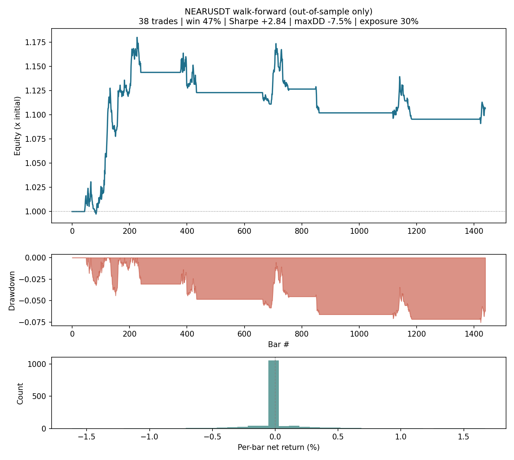
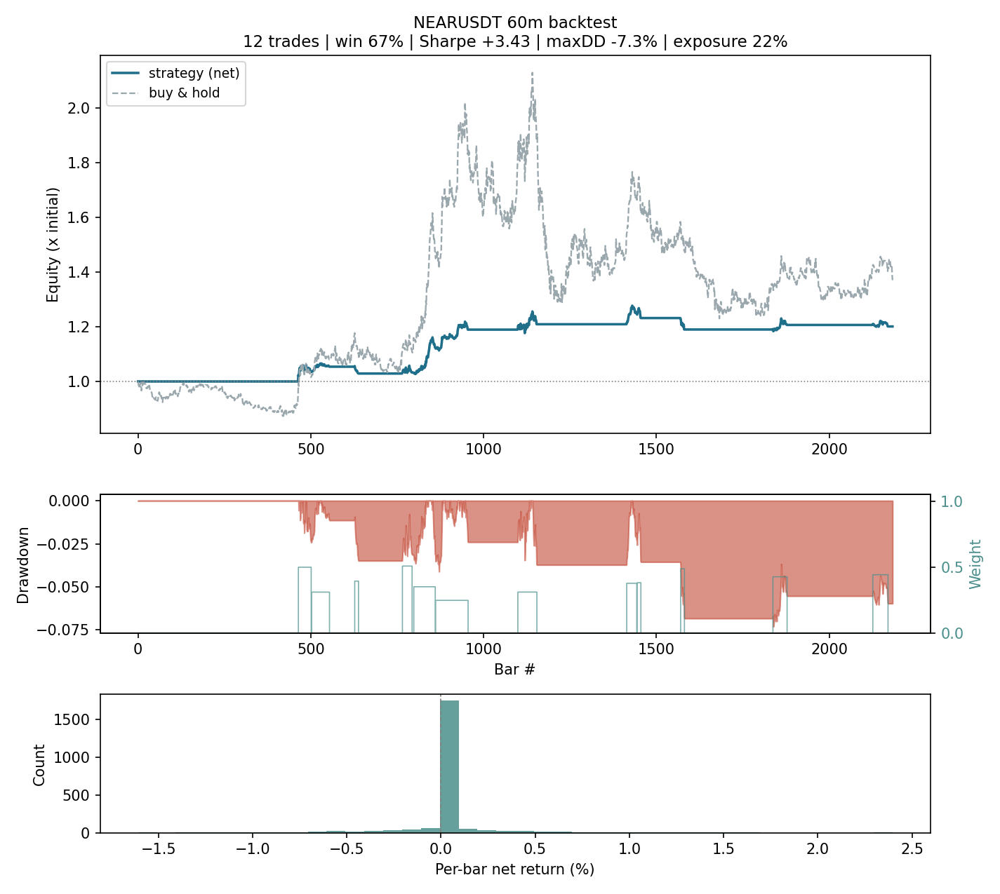

This project exists to demonstrate cost-aware backtesting and walk-forward validation done honestly — including the part where the honest answer is "not distinguishable from noise yet." Its one robust finding: on 91 days of real data, the v1 4-minute scalper lost 82% out-of-sample — the edge never survived 0.24% round-trip costs. v2 is the disciplined response: a slower, volatility-targeted trend engine, evaluated with the statistical caution the small sample demands.
no API key needed for simulation fees + slippage on every fill walk-forward out-of-sample only standard errors stated, not hidden MIT licensed
Read this as a worked example of honest evaluation, not as evidence that this strategy makes money. The sample is far too small to conclude anything — the most useful thing this page does is show how to see that, rather than hide it.
Setup: 91 days of real NEARUSDT 1-minute data (mid-April → mid-July 2026), aggregated to 60-minute bars, with Binance taker fees (0.10%/side) and slippage (0.02%/side) charged on every fill. Walk-forward re-optimises a deliberately small grid on rolling 30-day windows and reports only the unseen 10-day windows that follow.
| Configuration | OOS return | Sharpe | Max DD | Trades |
|---|---|---|---|---|
| v1 scalper @ 4m (the old bot) | −82.4% | — | −82.5% | 714 |
| v1 scalper @ 60m (same strategy, slower) | −9.4% | — | −17.0% | 39 |
| v2 @ 60m — walk-forward OOS | +10.7% | +2.84 | −7.5% | 38 |
| v2 @ 60m — 2× cost stress | +13.3% | +3.54 | −5.9% | 36 |
| v2 @ 60m — ETHUSDT (held-out symbol) | +5.8% | +2.15 | −7.5% | 26 |
| v2 @ 60m — SOLUSDT (held-out symbol) | +0.3% | +0.18 | −5.7% | 35 |
Read the +10.7% row together with the caveats below — on this sample it is one draw from a wide distribution, not evidence of skill. Every figure is reproducible in two commands (see Quickstart), including the ones that undercut the strategy.
On the only data tested, the v1 scalper is decisively dead (−82%, a robust finding), and v2 is not distinguishable from noise at this sample size. Claiming an edge would need multi-year data, bootstrapped confidence intervals and a deflated Sharpe ratio.
The deliverable here is the machinery — and the discipline to reach that conclusion honestly — not the +10.7%.

python -m near_bot walkforward --plot.v1 AND-ed six binary conditions into a 4-minute entry signal. Binary gates are brittle (nudge one threshold and trades flip on/off — the signature of curve-fitting), and the 4-minute timeframe made fees mathematically unbeatable. v2 keeps the two good ideas (order flow from taker-buy volume, walk-forward discipline) and rebuilds everything else:
Conviction is a continuous blend in [−1, 1]: volatility-normalised time-series momentum (fast + slow), Donchian breakout position, and smoothed taker-imbalance order flow. Signal strength now means something, and parameters move results smoothly instead of flipping individual trades.
A Kaufman efficiency-ratio filter refuses to trade chop, and a 200-bar trend filter refuses to buy downtrends. On 90 days of real data the trend filter alone moved a falling asset (SOL) from −5.9% to +0.3% out-of-sample: you cannot buy your way out of a downtrend, but you can decline to try.
Enter when the score crosses θin, exit when it fades below θout < θin. The band between them is the no-trade region where expected edge is smaller than round-trip cost. This is where most scalping systems donate their P&L to the exchange.
Position weight = target annualised vol ÷ realised vol, capped at 100%. Quiet markets get bigger positions, wild markets smaller ones — risk stays constant across regimes, which is what makes risk-adjusted comparisons between periods meaningful.
Costs are fixed per trade; trends scale with time. At 4 minutes the average move is a rounding error next to 0.24% round-trip costs; at 60 minutes it isn't. The default grid searches slower bars, not faster ones.
Instead of trading the single best in-sample parameter set (mostly luck), each window trades the top-3 and averages them — selection variance traded away. On this sample it doubled the OOS trade count while raising OOS Sharpe; the mechanism matters more than the number.
Full reasoning, the failure analysis of v1, the plateau-robustness table and the named statistical gaps are in docs/STRATEGY.md and the roadmap.
# install git clone https://github.com/ysmouhib/near-momentum-bot.git && cd near-momentum-bot pip install -e ".[dev,plot]" # download 90 days of real 1m data (no API key; uses Binance's public dumps) python scripts/download_data.py --symbol NEARUSDT --days 90 # fixed-config backtest near-bot backtest --csv data/klines_1m.csv --trades --plot reports/backtest.png # the number that matters: walk-forward out-of-sample near-bot walkforward --csv data/klines_1m.csv --plot reports/oos.png
Or skip the terminal entirely: the browser simulator runs the same engine (parity-checked trade-for-trade against the Python code) on live Binance data, with every parameter adjustable — including walk-forward validation in-page.
